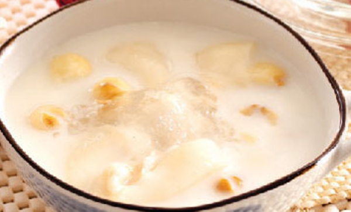
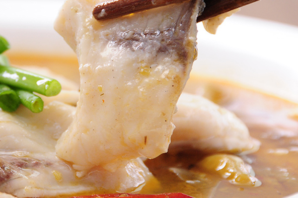
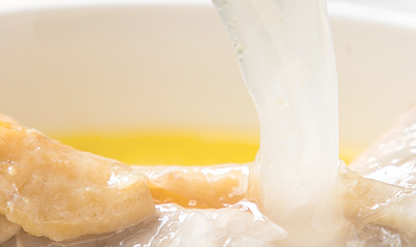

原文连接:https://www.daquan.com/post/12915.html
燕窝怎么炖最有营养就要看燕窝是用来滋补什么的，如果是长期失眠的患者可以将燕窝和牛奶一起炖煮，睡前食用，能够安神治疗失眠。如果是孕妇，将燕窝和鸡汤或者鱼汤一起同炖，营养价值会翻倍。燕窝如果和虫草以及鸡汤同炖，营养价值是最高的。这是因为虫草也是有着很强的营养价值。
燕窝和虫草同炖最有营养
1、燕窝和虫草

燕窝是需要隔水炖的，所以燕窝和其他成分一起炖时，都是隔水炖的，所以选择的材料都是容易炖熟的或者已经是熟的了。燕窝和虫草，虫草本身是非常滋补并且珍贵程度不比燕窝低的药材。燕窝和虫草一起炖时最有营养的。燕窝和虫草一起炖的方法是，将燕窝和虫草都泡开，然后将虫草和水鸭一起炖，在炖好并且已经关火的时候，最后再将清炖隔水炖的燕窝倒入虫草水鸭中搅拌一起食用。
2、燕窝和鸡汤

除了燕窝和虫草一起炖，燕窝和鸡汤同炖也是非常有营养的。鸡可以选择有营养的土鸡或者老母鸡，将鸡炖煮成汤，然后将鸡汤上的有撇干净，取里面的清汤。在炖鸡的同时可以泡燕窝，然后用鸡的清汤来给燕窝做打底，用鸡汤代替纯净水，然后隔水炖煮燕窝，燕窝好了之后，将燕窝和鸡汤一起饮用干净即可。
3、燕窝和牛奶

像长期失眠的朋友可以使用牛奶炖燕窝，牛奶炖燕窝有着安神助眠的功效外，还能帮助补充体内的钙。燕窝牛奶是非常适合青少年食用的，能帮助青少年骨头的发育，能够缓解青少年压力，补充钙离子。
4、燕窝和鱼汤

燕窝和鱼汤是最适合坐月子的女性使用的，这是因为鱼汤有着下奶的功效，生完孩子后用鱼汤炖燕窝不仅营养丰富，还能帮助下奶以及产后恢复。生产后使用鱼汤炖燕窝是最有营养的。
燕窝炖煮需要注意的事项
1、鸡汤需要使用清汤

燕窝炖煮一定要注意鸡汤要使用清汤，像鱼汤还有鸭汤最好都要口味清淡。如果味道太过辛辣，不仅容易导致上火，还会对滋补有影响。像长期身体虚弱的病人还有手术后滋补的病人，口味都是要清淡的。
2、食用的时间
燕窝的食用时间最好是在早上8点之前空腹和晚上10点半之后空腹食用。这两个时间都是吸收营养的最佳时段，这种时候用燕窝滋补，可以达到事半功倍的功效。
结语：通过上文的介绍，相信大家都了解了关于燕窝怎么炖最有营养，那就是将燕窝和虫草与鸡汤同炖，如果身体较差，不能使用虫草和喝鸡汤的，可以直接清炖燕窝来滋补身体。